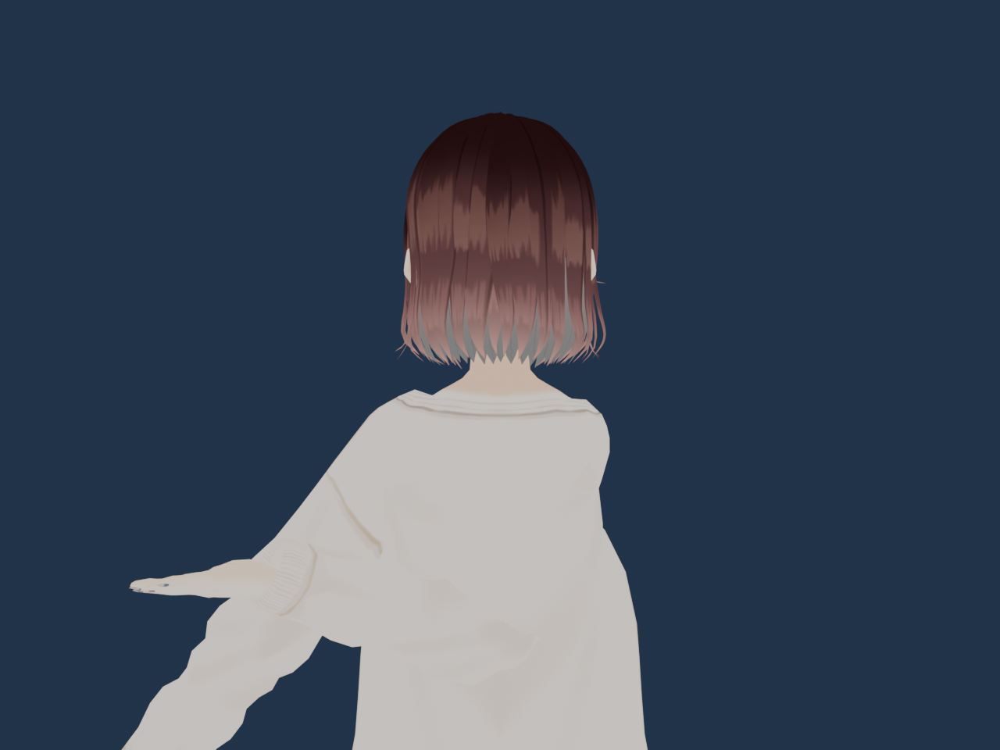

Domina la Lengua de Señas Colombiana con Visión Artificial e IA Local
Aprende con Sol, tu arquitecta de rutas pedagógicas. Practica frente a tu cámara web con feedback biomecánico en tiempo real a 30 FPS y certifícate en el Modo Examen Sin Video.

Los 3 Pilares del Ecosistema EXIS
Diseñado para llevarte desde principiante absoluto hasta la memorización real y fluida de LSC.
1. Rutas Adaptativas Estilo Duolingo
Avanza paso a paso en un mapa visual serpenteante. Pídele a Sol IA rutas a tu medida o crea tus propios planes combinando vocabulario y dactilología.
2. Visión Artificial Biomecánica
Google MediaPipe Hands analiza los 21 puntos anatómicos de tu mano a 30 FPS en tiempo real. Corrige posturas, aperturas y trayectorias sin salir de tu navegador.
3. Modo Examen Sin Video
El video y las pistas se ocultan bajo un escudo de evaluación ciega. Demuestra las señas de memoria frente al cronómetro para desbloquear tu certificado.
Comienza tu Entrenamiento LSC
Regístrate o inicia sesión para guardar tu racha, XP y rutas de aprendizaje.